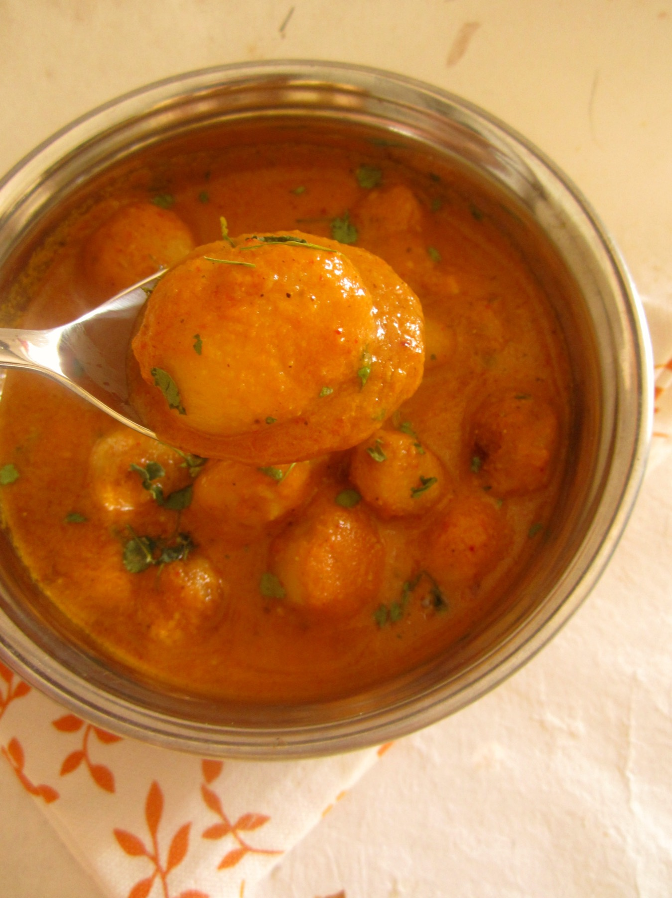

Kashmiri Dum Aloo
Fried baby potatoes finished in a yogurt gravy with fennel and dry ginger, no onion or garlic

Contains: milk
Checked against the ingredient list for ten allergens: milk, egg, fish, crustaceans, tree nuts, peanuts, sesame, mustard, soy and gluten. Brands vary, so read the label on anything new to you.
Ingredients
Quantities for 4.
- 600g baby potatoes Potatopeeled, pricked all over
- 1 cup, whisked smooth Yogurt
- 2 tbsp Kashmiri Chillithe colour of the dish depends on this
- 2 tsp Fennel Powder
- 1 tsp Dry Ginger Powder
- 3 pods, crushed Cardamom
- 1 Black Cardamomoptional
- 1 small piece Cinnamonoptional
- 3 Clovesoptional
- a good pinch Asafoetida
- 2 tbsp Ghee
- for frying Neutral Oil
- to taste Salt
Cookware
stovetop, kadhai
Before you start
- Kashmiri Pandit cooking uses no onion or garlic. Fennel and dry ginger carry the dish instead, which is why both are essential here.
- Prick the potatoes deeply before frying. The holes are how the gravy gets inside during the dum stage.
- Whisk the yogurt completely smooth and add it off the heat, stirring constantly, or it will split.
Method
- Fry the pricked potatoes in hot oil until deep golden and crusted all over, 8-10 minutes. Drain. They should be cooked through but firm.
- Whisk the yogurt with the Kashmiri chilli, fennel powder and dry ginger until there are no lumps. Keep it beside the stove.
- Heat the ghee in a heavy pan, add the asafoetida, cardamom, cinnamon and cloves, and let them bloom for 20 seconds.
- Take the pan off the heat. Pour in the yogurt mixture, stirring without stopping. Return to low heat and keep stirring until it comes to a bare simmer and thickens slightly, about 5 minutes.Constant motion and low heat are what stop yogurt splitting.
- Add the potatoes and salt with about half a cup of hot water. Cover tightly and cook on the lowest possible heat for 15-20 minutes, shaking the pan occasionally.
- Uncover; the gravy should cling to the potatoes and the fat should show at the edges. Rest 10 minutes before serving.
Storage
Keeps 3 days refrigerated and the flavour deepens. Do not freeze; the potatoes turn grainy and the yogurt separates. Reheat over low heat with a splash of water.
Nutrition Low estimate
Low protein: 6+ g a serving, 8% of the calories
| Per serving233 g | Per 100 g | |
|---|---|---|
| Calories | 312+ kcal | 134+ kcal |
| Protein | 6.1+ g | 3+ g |
| Carbohydrate | 32.6+ g | 14+ g |
| of which sugars | 4.4+ g | 2+ g |
| Fibre | 5.4+ g | 2+ g |
| Fat | 18.7+ g | 8+ g |
| of which saturated | 6.4+ g | 3+ g |
| of which unsaturated | 11.3+ g | 5+ g |
The + means ingredients given to taste rather than by weight are counted as zero, so the true figure is a little higher than shown. A rough guide only. A large part of this ingredient list is given to taste rather than by weight, or much of what is weighed is not eaten. Ingredients given to taste rather than by weight are counted as zero, so the real figure is a little higher than this. The + says so. Estimated from raw ingredients using USDA FoodData Central. Cooking changes are not modelled, and added salt is excluded, so sodium is not given.
Written and checked against sources, not cooked in a test kitchen. Times, yields, allergens and nutrition are worked out rather than measured, so use your own judgement on doneness and on storing. More in About.